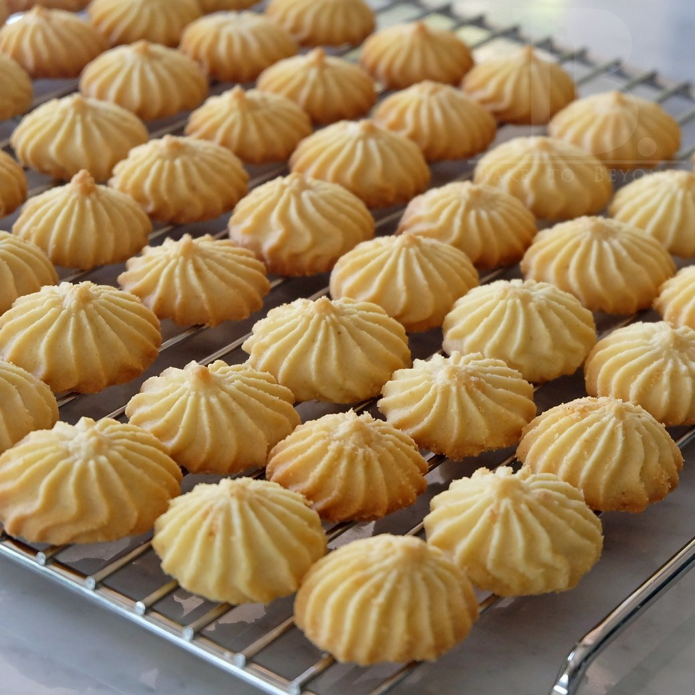

คุกกี้เนยสด (สูตรลดต้นทุน)
คุกกี้เนยสด
ส่วนผสม คุกกี้เนยสด
มาร์การีน 210 กรัม
น้ำตาลทราย 200 กรัม
กลิ่นวานิลลาบัตเตอร์ หรือกลิ่นนมเนย 2 ช้อนชา
ไข่ไก่ (เบอร์ 2) 1 ฟอง
แป้งสาลีอเนกประสงค์ 320 กรัม
ผงฟู 1+1/2 ช้อนชา
เกลือ 1/2 ช้อนชา
ช็อกโกแลตชิพ
วิธีทำคุกกี้เนยสด
นำมาร์การีนและน้ำตาลทรายใส่ลงชามผสมหรือกะละมัง ตีให้เข้ากันจนขึ้นฟู ใส่กลิ่นวานิลลาบัตเตอร์และไข่ ตีให้เข้ากัน ร่อนแป้ง ผงฟู และเกลือ ใส่ลงไป ตะล่อมส่วนผสมทั้งหมดให้เข้ากัน
ตามสูตรจะแบ่งแป้งทั้งหมด 3 ส่วน ส่วนแรกใส่ถุงบีบ และใช้หัวบีบ 1m บีบเป็นดอก (แบบนี้ไม่ค่อยแนะนำ เพราะสูตรนี้แป้งแข็ง ใช้ถุงบีบบีบค่อนข้างยาก ใช้กระบอกบีบจะง่ายกว่า) หลังจากนั้นนำเข้าอบที่อุณหภูมิ 160 องศาเซลเซียส ประมาณ 10-15 นาที นำออกจากเตาแล้วกลับด้านคุกกี้ และอบรอบที่ 2 อีกประมาณ 3-5 นาที (แล้วแต่เตา) เพื่อให้คุกกี้กรอบนานขึ้นส่วนที่สอง ใช้ช้อนชาหรือสกู๊ปไอศกรีมตักให้มีขนาดเท่ากัน และปั้นก้อนกลม วางบนถาดที่รองกระดาษไขไว้ หลังจากนั้นใช้ส้อมกดให้เป็นรอย แล้วนำเข้าเตาอบ 2 รอบ อบด้วยอุณหภูมิและเวลาเท่ากับแบบแรก (แล้วแต่เตา)
ส่วนที่สาม ใส่ช็อกโกแลตชิพแล้วคนให้เข้ากัน ใช้ช้อนหรือสกู๊ปไอศกรีมตักเหมือนแบบที่สอง ปั้นกลมและใช้ส้อมกด หลังจากนั้นอบ 2 รอบ ด้วยอุณหภูมิและเวลาเหมือนกับแบบแรก (แล้วแต่เตาเช่นกัน)
นำออกจากเตาพักให้เย็น จัดเสิร์ฟ หรือจะเก็บใส่ภาชนะปิดฝาให้แน่น จะกรอบนานได้หลายอาทิตย์
